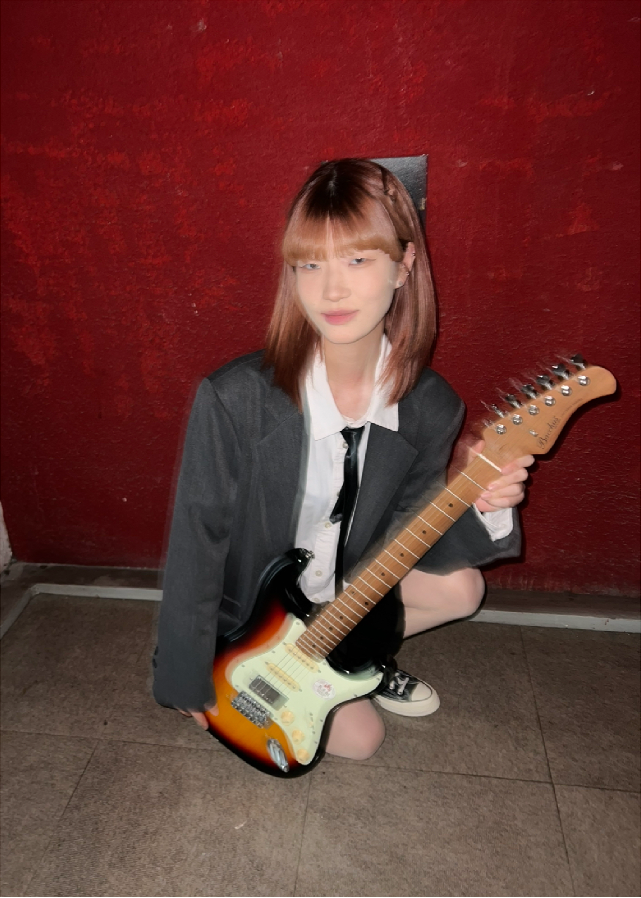
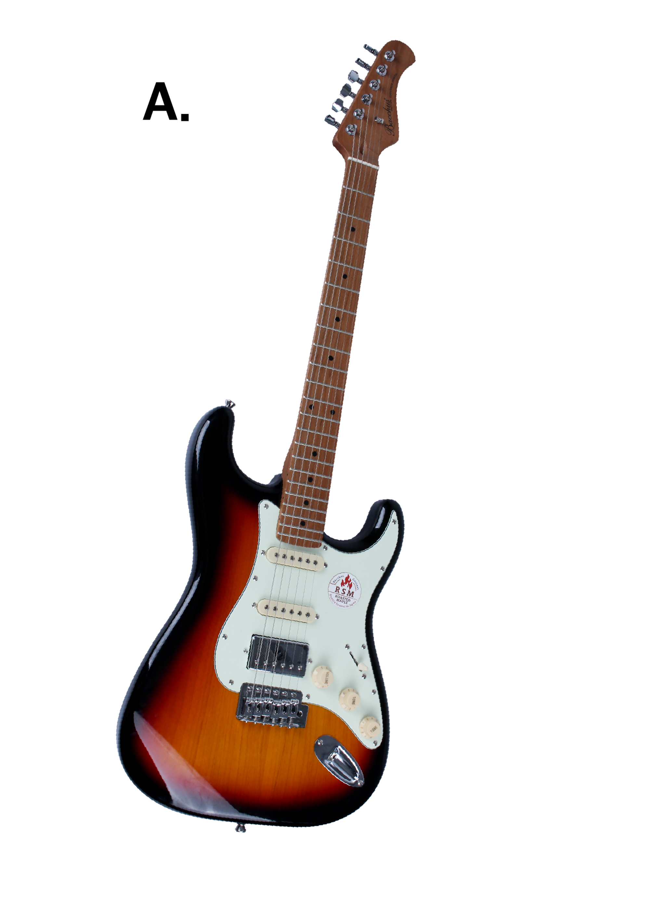
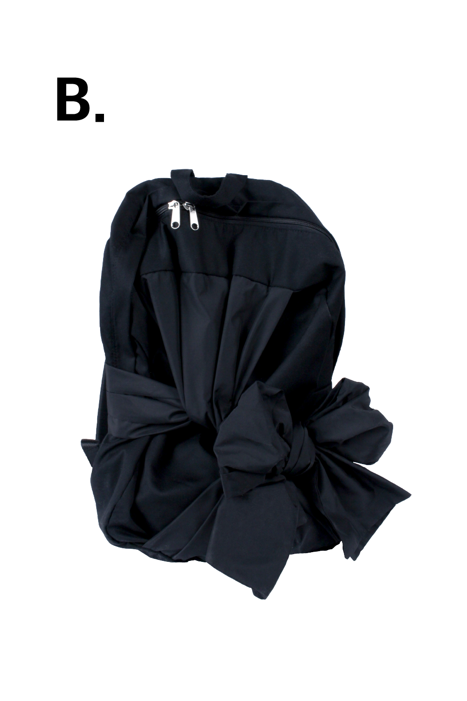
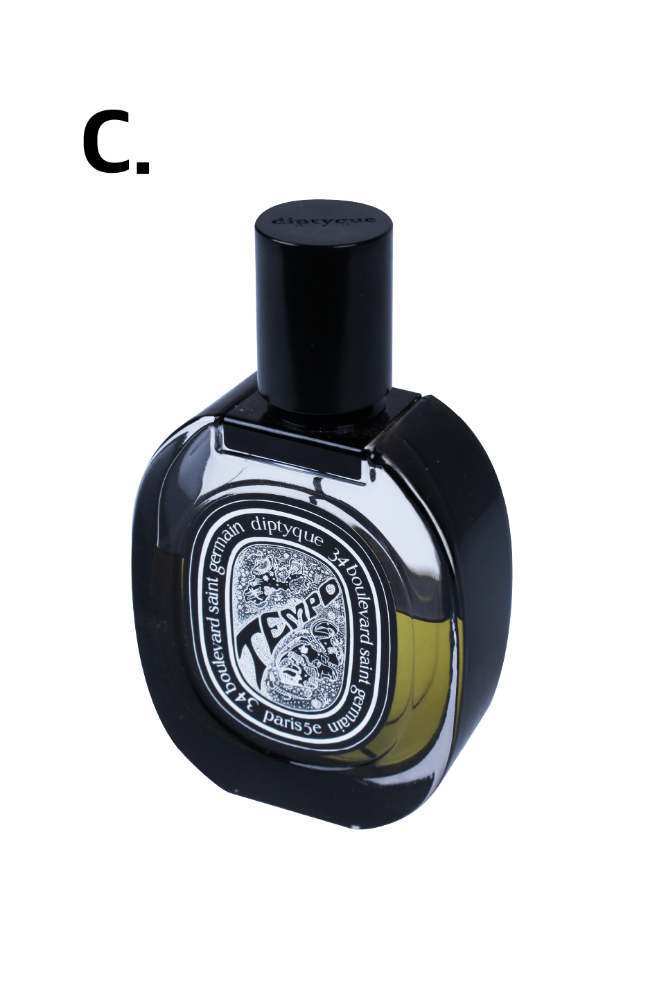
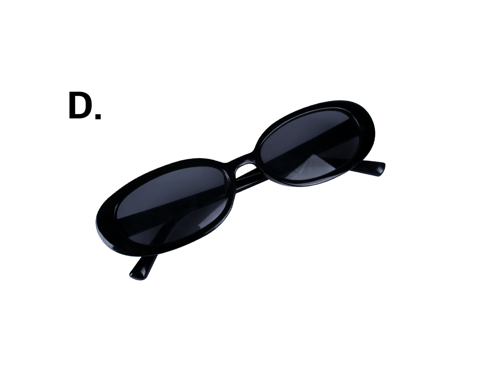

|  |  |
언젠가 여유가 되면 배우고 싶었던 일렉기타 고등학교 졸업 후 대학교 입학 전 여유 시간에 배우기 시작했다. 기타를 배우며 코드도 알게 되고연주하고 싶던 노래를 연주할 수 있게 되었다. 직접 아르바이트를 하며 모은 돈으로 구매한 기타라 그런지 더욱 애정이 가는 나의 아이템. This is an electric guitar that I wanted to learn if I had time.After graduating from high school, during the free time before entering universityI started learning. As I learned to play the guitar, I learned to understand the chordNow I can play the song I wanted to play.I bought it with the money I had saved while working part-timeMaybe because it's a guitar, it's my item that makes me feel more affectionate. いつか余裕があれば習いたかったエレキギタ ーです。高校卒業後、大学入学前の余裕時間 にですね習い始めました。 ギターを習いながらコ ードも分かるようになりました演奏したかった歌 を演奏できるようになりました。直接アルバイ トをしながら貯めたお金で購買したギターだか らか、もっと愛情が湧く私のアイテムです。 |
|  |
브랜드 ‘이우가마카라스'에서 구매한 가방이다. 아르바이트 하는 가게의 사장님께서 생일 선물로 주신 돈으로 구매한 가방이라 애정이 가는 나의 아이템. The bag was purchased from the brand "Iuga Macaras."The owner of a part-time job saidI bought this bag with the money I got as a birthday presentIt's my item that makes me feel affectionate item. ブランド「イウガマカラス」から購入したバッ グだ。アルバイトをしている店の社長が誕生 日プレゼントでもらったお金で買ったカバン なので愛情が湧く私のアイテム。 |
|

|
 |
친구와 제주도 여행 갔다가 돌아오는 길에 구매한 딥디크 향수이다. 이 향수를 뿌리면 그때의 추억이 생각나서 애정이 가는 나의 아이템. On my way home from a trip to Jeju Island with my friendsIt is a deep deak perfume that I bought. This perfumeWhen I put it on, it reminds me of the memories of that time and makes me feel affectionateMy item. 友達と済州島旅行から帰る途中に購入した ディープディーク香水である。 この香水をかけるとあの時の思い出が思い 出して愛情が湧く私のアイテム。 |
|  |
착용하면 힙해지는 선글라스이다. 친구한테 선물받은 선글라스라 애정이 가는 나의 아이템. These sunglasses make you hip when you wear them.These sunglasses from a friend make me feel affectionateMy item. 着用するとヒップになるサングラスだ。 友達からもらったサングラスなので、 愛情が湧く私のアイテム。 |